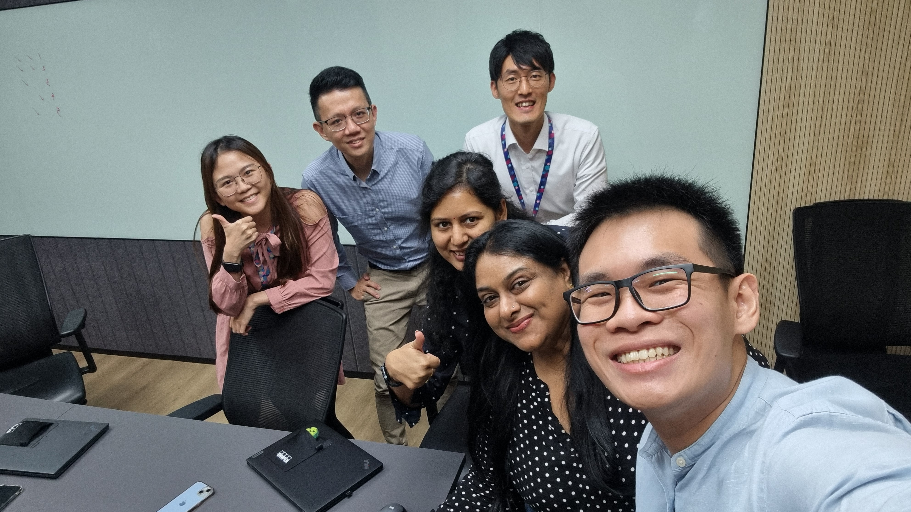
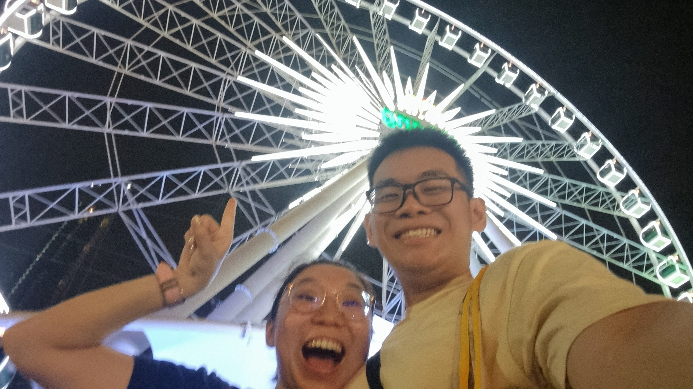
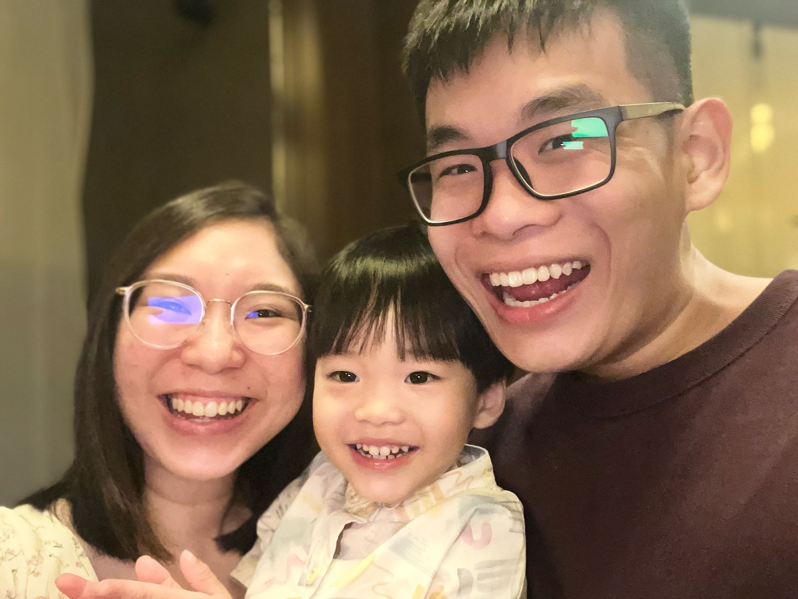

Hello world! 👋
About Me
Hi, I am Zhong Yan, a Y2 SCIS student majoring in DCS + BA and AI.
Here are some interesting things about me:
- I am currently pursuing Google's Machine Learning Engineer certification.
- My primary way of learning is through online courses such as Udemy and Coursera.
- I love Michael Scott and Tom Hanks.
You can find my work easily on Linkedin. I shamelessly post my progress along the way with no engagement whatsoever.
My Projects
Coursera Google Advanced Data Analytics Course
During my y1 summer break, I did an internship with KPMG SG as a data analytics intern.
I mainly did documentation and development of PowerBI dashboards.
Whenever I had free time, I would complete onlines courses, and this was one of the ones that took me the longest.
Here is my GitHub Repo.
My Girlfriend
Summer Thailand Trip
Before my internship started, I went to Thailand with my girlfriend for 8 days.
It was my first time being in Thailand, and I have to say it was a eye opening experience.
Takeaways:
- People are so friendly and patient.
- Life moves at a slower pace.
- Things are not cheap there.
- I sweat more in Singapore even though its hotter there???
Clickbaiting People
I like to clickbait people with my nephew because people think that we look alike.
I am quite fond of children as they are so cute and do the darnest things ever.
Honestly the only thing that is stopping me now is money, so if you're watching this please give me opportunities.
Contact Me
Please connect with me on Linkedin or approach me. I am friendly and I promise I wont bite.